Rulebook
Nine rules that survived thirty rounds and about two thousand prompts. Each rule is one sentence and three copyable prompts, cited by tag id into docs/prompts/exploration-log.txt. Proof images attach one keeper at a time, with the prompt captured at harvest.
R1One ink, then restraint
Pick one ink and commit: Prussian blue cyanotype on cream, phosphor green on near-black, or black on foxed cream with a single small red mark. Never navy plus gold, never rainbow by default. Color is the minority lane, not the house style.
flags: --s 150 --draft (chaos from the UI slider)
a vinyl record center label of a stained glass window's leaded seams catching sun, stark black-and-white with one tiny red, engraved "HERMES", thermal-receipt paper grain, faded emulsion --ar 1:1 --s 150 --draft
r30#17
a red fox pouncing through fresh snow, fine 18th-century intaglio line engraving, black on cream, one tiny red mark, wordmark "HERMES", dot-matrix printer banding on tractor-feed paper --ar 3:4 --s 150 --draft
r30#14
a mimic octopus rippling chromatophore patterns across a coral shelf, phosphor-green dot-matrix dithering with CRT scanlines on near-black, wordmark "NOUS RESEARCH", datamatrix micro-scan grid, hairline registration --ar 4:5 --s 150 --draft
r30#11
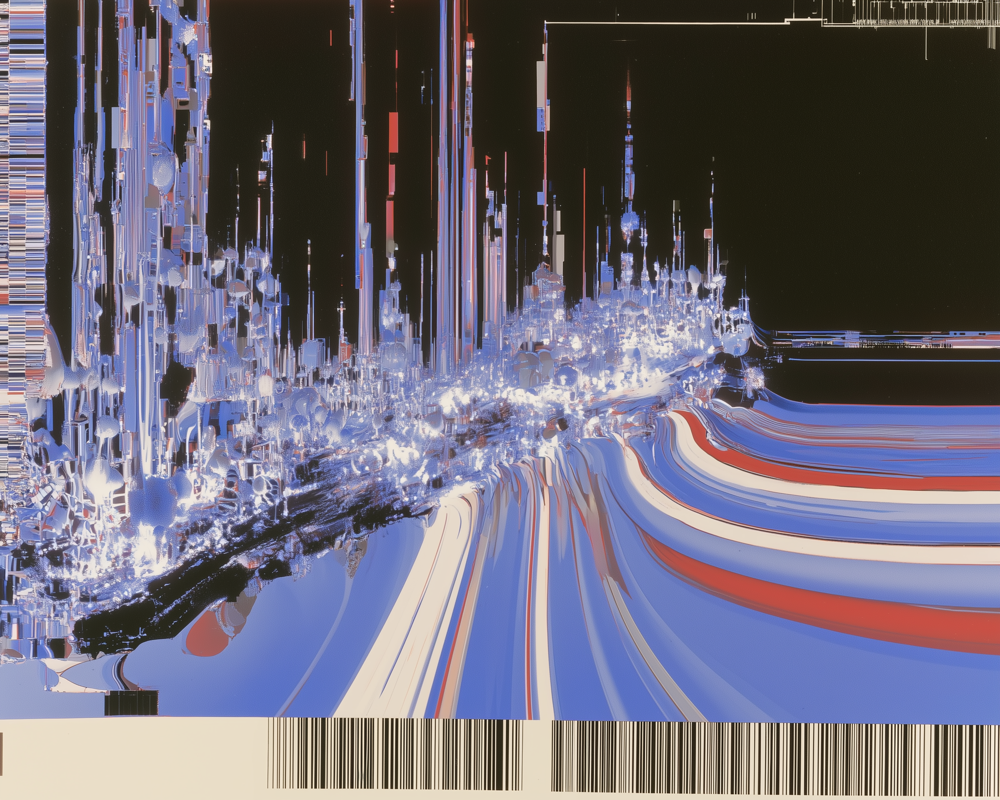
R2Texture is the medium
Every image goes through a print or early-digital process: risograph misregistration, halftone rosette, Bayer dither, thermal-receipt grain, xerox degradation, CRT scanlines. Clean renders read as stock. When it looks too smooth, add one texture clause.
flags: --s 150 --draft
a desert varnish patina darkening a sandstone wall, chalk-and-charcoal sketch, in the style of Gustav Klimt — gold-leaf ornamentation, mosaic-like pattern fields, sensuous decorative line, wordmark "HERMES", thermal-receipt paper grain, faded emulsion --ar 3:2 --s 150 --draft
r30#60
a telegraph key mid-tap, sending a coded message, shallow depth of field with dreamy bokeh, in the style of Paul Klee — childlike geometric whimsy, textured color field, symbolic line, wordmark "NOUS RESEARCH", xerox photocopy degradation, toner speckle, high-contrast blowout --ar 3:2 --s 150 --draft
r30#59
a mountain goat balanced on a sheer cliff face, moonlit nocturne, in the style of Francisco Goya — dark satirical etching, grotesque social critique, stark chiaroscuro, wordmark "NOUS RESEARCH", ordered Bayer dithering, low-bit indexed color --ar 1:1 --s 150 --draft
r30#57
R3Statuary in, living faces out
No photographic or living human faces. Classical marble statuary, busts, reliefs, and caryatids are approved as art objects: gods in the machine, glitched into dither. Machine habitat, not portraiture.
flags: --s 150 --draft
a shattered marble bust of Apollo, phosphor-green dot-matrix dithering with CRT scanlines on near-black, wordmark "HERMES" --ar 3:4 --s 150 --draft
r29#23
an ultraviolet fluorescence capture of a winged Nike victory statue, electric green and violet fluorescence on near-black, monospace HUD label "NOUS RESEARCH" --ar 4:5 --s 150 --draft
r29#13
Mannerist etching of battle and hunt scenes, dense energetic composition rendering of an ultraviolet fluorescence capture of a winged Nike victory statue, electric green and violet fluorescence on near-black, "NOUS RESEARCH" --ar 4:5 --s 150 --draft
r28#230
R4Only the real lexicon
Text stays anchored to words Nous actually uses: NOUS RESEARCH and HERMES first, project names rarely. Latin letters only, no invented slogans, no Greek script. Match the word to the subject: a bazaar can say open source, a cathedral cannot.
flags: --s 150 --draft
a sun pillar rising above a frozen horizon, baroque maximalist density, in the style of Emma Kunz — pendulum grid-field drawings on graph paper, radial symmetry, wordmark "NOUS RESEARCH", VHS tracking artifacts, chromatic aberration, analog noise --ar 3:2 --s 150 --draft
r30#58
in the style of Romeyn de Hooghe — Dutch Baroque etching, propagandistic dense allegorical satire — depicting a pulsar's lighthouse beam sweeping through space, terracotta and sand, sun-baked, wordmark "HERMES", ordered Bayer dithering, low-bit indexed color --ar 4:5 --s 150 --draft
r30#51
in the style of Yohji Yamamoto — ink-black asymmetry, calligraphic void, matte cloth — depicting a swarm of drones forming "NOUS" over a sleeping city, olive and ochre with black, wordmark "HERMES", datamatrix micro-scan grid, hairline registration --ar 5:4 --s 150 --draft
r30#50
R5Neoclassical meets machine habitat
Subjects fuse the classical and the computational: colonnades dissolving into server racks, brutalist compute-cathedrals, cartouches, orreries, blueprint schematics. Scenes beat diagrams; keep labeled-diagram prompts under a third of any batch.
flags: --s 150 --draft
a Corinthian capital fused with circuit traces, thermal-receipt grain, warm-grey duotone halftone, wordmark "NOUS RESEARCH" --ar 4:5 --s 150 --draft
r29#32
a Doric colonnade dissolving into server racks, thermal-receipt grain, warm-grey duotone halftone, wordmark "HERMES" --ar 3:2 --s 150 --draft
r29#21
a laurel wreath and acanthus cartouche, black-ink letterpress on foxed cream, ornament rules, wordmark "LANGUAGE MODELS" --ar 2:3 --s 150 --draft
r29#20
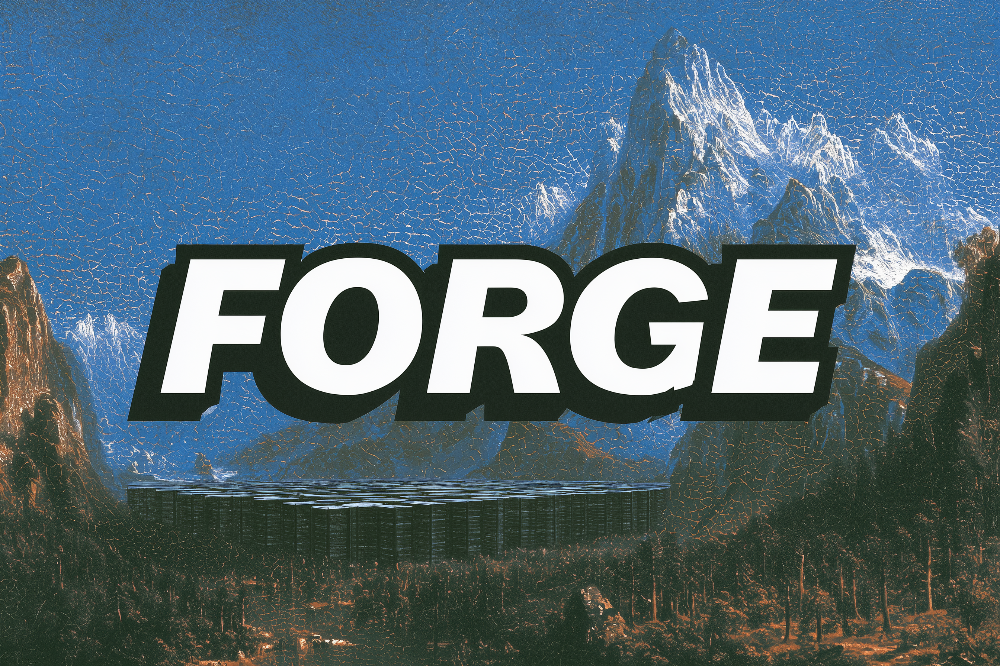
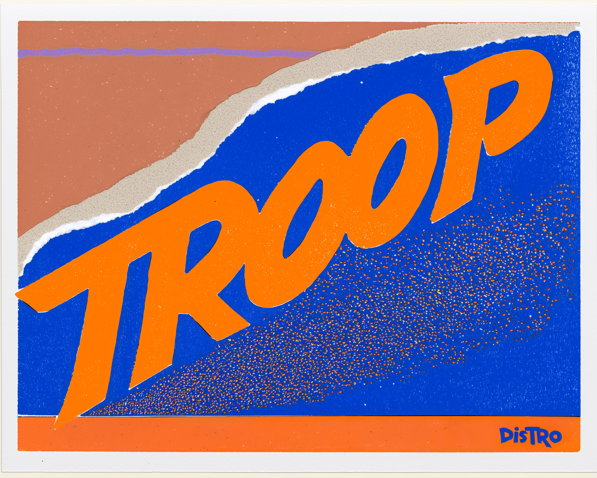
R6The spectral break
The deliberate break from print texture is false-color sensor imagery: FLIR thermal, Aerochrome infrared, UV fluorescence, X-ray, night vision, schlieren, lidar. Wordmarks become HUD labels and scale bars. Moodboard grain reads as sensor noise here, so keep it on.
flags: --s 150 --draft, moodboard hermes on
Spanish Luminism, sun-dazzled beach scenes, dazzling light on water rendering of a color-schlieren capture of an ice cave's blue interior lit by a single shaft, rainbow refractive-index gradients on black, "HERMES", screenprint halftone with slight ink bleed and paper tooth --ar 3:2 --s 150 --draft
r30#42
Vignelli/Unimark rationalism, Helvetica, tight modular grid, red-black rendering of a lidar point-cloud scan of a total solar eclipse with the corona blazing, glowing false-color depth-gradient points in a black void, "NOUS RESEARCH", risograph misregistration, ink texture, off-register color --ar 16:9 --s 150 --draft
r30#41
color-chart grid, or grey squeegee blur rendering of a gen-3 night-vision capture of a whale shark gliding through a curtain of plankton, phosphor-green intensified image, circular vignette, IR bloom, "HERMES", screenprint halftone with slight ink bleed and paper tooth --ar 4:5 --s 150 --draft
r30#40
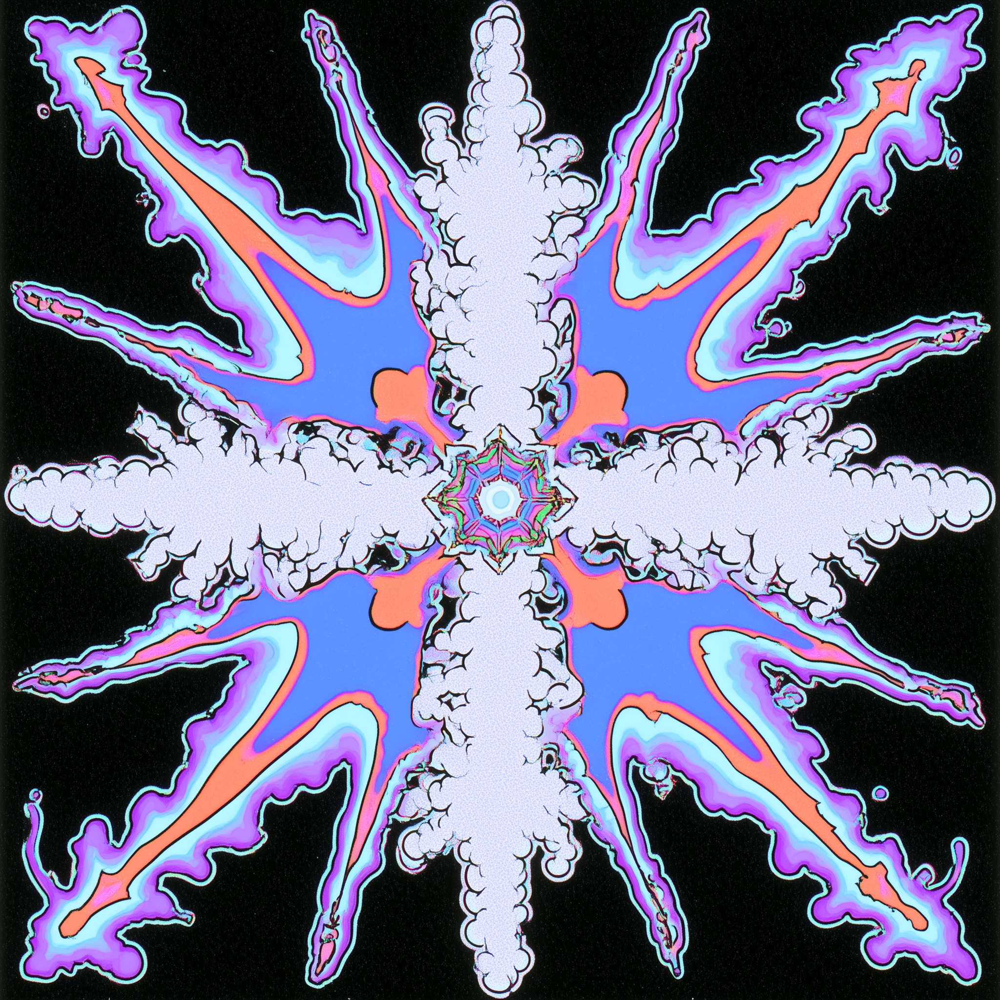
R7Setup on Midjourney 8.2
Personalize on with Personalization profile #1 and the hermes moodboard both checked; confirm both tags on the job card. Draft mode on. Chaos and weird from the UI, never in the prompt. No --sref on the classical lane, and --sw is dead while any moodboard is attached: stack references to dilute instead.
flags: --ar <ratio> --s 150 --draft
in the style of Henri Matisse cut-outs — bold organic paper-cutout shapes, flat jewel and pastel color, white ground — depicting a loom weaving a vast tapestry of thread, oxblood and gold on cream, no text, purely visual --ar 4:5 --s 150 --draft
r28#29
in the style of Stefan Sagmeister — hand-made object-typography, provocation, tactile lettering — depicting a row of caryatid columns, rust and forest-green, warm earth, no text, purely visual --ar 1:1 --s 150 --draft
r28#28
in the style of Johannes Vermeer — soft window light, quiet domestic interior, luminous glazed color — depicting a modernist glass pavilion in a birch forest, warm greys and a single vermilion, no text, purely visual --ar 16:9 --s 150 --draft
r28#27
R8Discovered styles: technique transfers, atmosphere swallows
Roll --sref random to discover styles, then read the seed off the job card. Seeds that encode rendering technique (linework, palette, print process) transfer to any subject and keep the wordmark. Seeds that encode atmosphere erase subject and wordmark; use them only on the off-brief lane.
flags: --s 150 --draft --sref random
a leafy sea dragon drifting among kelp, camouflaged as fronds, extreme macro close-up, in the style of Antonio Tempesta — Mannerist etching of battle and hunt scenes, dense energetic composition --ar 4:5 --s 150 --draft --sref random
r27#499
a desert varnish patina darkening a sandstone wall, cutaway cross-section, in the style of Walker Evans — deadpan documentary photography, plain-style frontal vernacular Americana --ar 5:4 --s 150 --draft --sref random random
r27#498
an abandoned greenhouse reclaimed by vines, cyanotype blueprint, in the style of Honoré Daumier x Carleton Watkins — lithographic caricature, loose expressive line, biting social satire; 19th-century frontier photography, monumental wilderness plate composition --ar 3:4 --s 150 --draft --sref random random random
r27#497
R9The Nous Girl rides as an image prompt
On 8.2 her reference goes first in the prompt as a bare image URL with --iw 1.5. Identity holds, palette survives, the scene survives only if the subject is not itself a figure: pair her with architecture, instruments, and machines, never statuary. --oref and --cref are refused; --iw 3 collapses to monochrome portraits.
flags: <image URL first> --iw 1.5 --s 150 --draft
https://raw.githubusercontent.com/thedavidmurray/nous-inspired-design-system/main/public/nous-girl-refs/nous-girl-ref-E-source-mascot.png in the style of Stefan Sagmeister — hand-made object-typography, provocation, tactile lettering — depicting an observatory dome cracking open at dusk, primary red blue yellow, Bauhaus, wordmark "NOUS RESEARCH", coarse halftone dot screen, visible CMYK rosette --ar 4:5 --iw 1.5 --s 150 --draft [GIRL/iw 1.5]
r30#64
https://raw.githubusercontent.com/thedavidmurray/nous-inspired-design-system/main/public/nous-girl-refs/nous-girl-ref-E-source-mascot.png in the style of El Lissitzky — Proun constructivist axonometric abstraction, red-black-grey — depicting a wasp's papery nest under an eave, aubergine and rose, plum duotone, wordmark "NOUS RESEARCH", coarse halftone dot screen, visible CMYK rosette --ar 4:5 --iw 1.5 --s 150 --draft [GIRL/iw 1.5]
r30#63
https://raw.githubusercontent.com/thedavidmurray/nous-inspired-design-system/main/public/nous-girl-refs/nous-girl-ref-E-source-mascot.png in the style of Henri Matisse cut-outs — bold organic paper-cutout shapes, flat jewel and pastel color, white ground — depicting a pomegranate split open, seeds catching the light, rust and forest-green, warm earth, wordmark "NOUS RESEARCH", dot-matrix printer banding on tractor-feed paper --ar 4:5 --iw 1.5 --s 150 --draft [GIRL/iw 1.5]
r30#62
Archive: v10/v11-era output, not the validated recipe
Twenty-four frames from the May 2026 corpus that have an exact prompt on disk. They were made before this rulebook existed, with Midjourney v6-era flags, and no entry claims a rule. Each shows its verbatim prompt and the prompts-file line it came from. The other 173 files on the archive page have no recoverable prompt and get nothing invented.
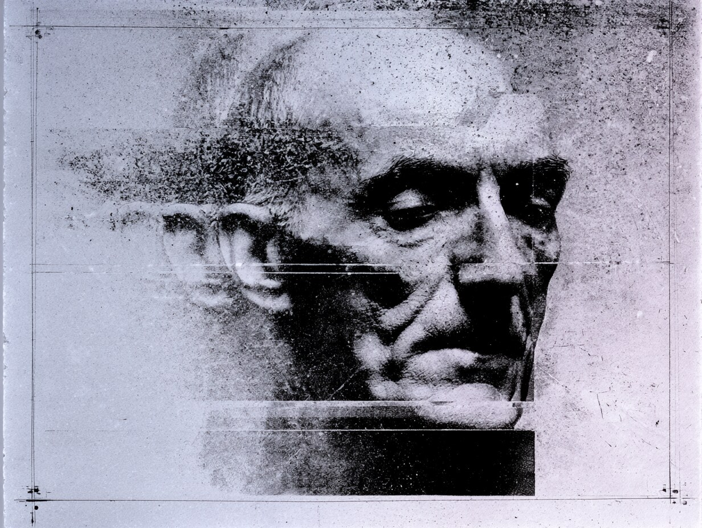
Bavarian limestone lithography stone, drawn image visible on polished surface, grease crayon marks, tusche washes showing tonal range, registration marks in corners, stone grain texture, printmaking material aesthetic --ar 4:3
prompts/all-prompts-v3.txt:151
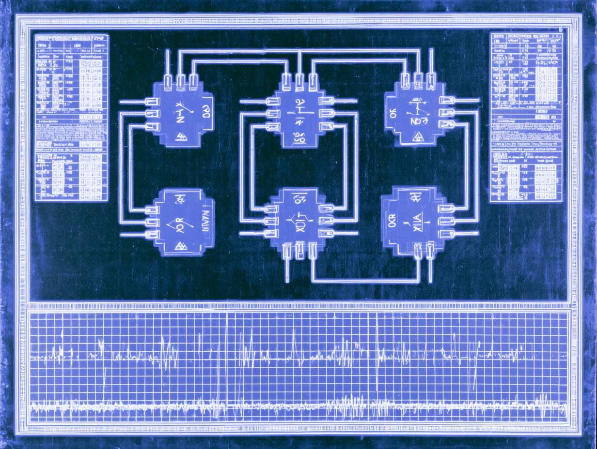
Boolean logic gate diagram, AND OR NOT NAND NOR XOR gates in standard symbols, interconnected with signal lines, truth tables adjacent, timing diagram below, dark background, digital logic textbook aesthetic --ar 4:3
prompts/all-prompts-v3.txt:475
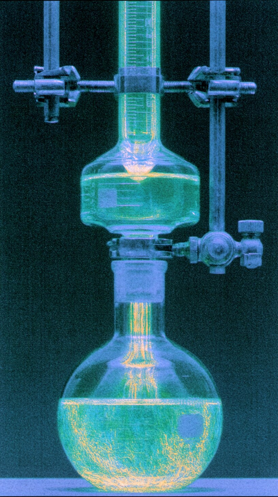
Burette clamped on ring stand, meniscus visible at eye level, stopcock valve, graduated markings, titration flask below with color indicator change, dark laboratory background, analytical chemistry aesthetic --ar 9:16
prompts/all-prompts-v3.txt:295
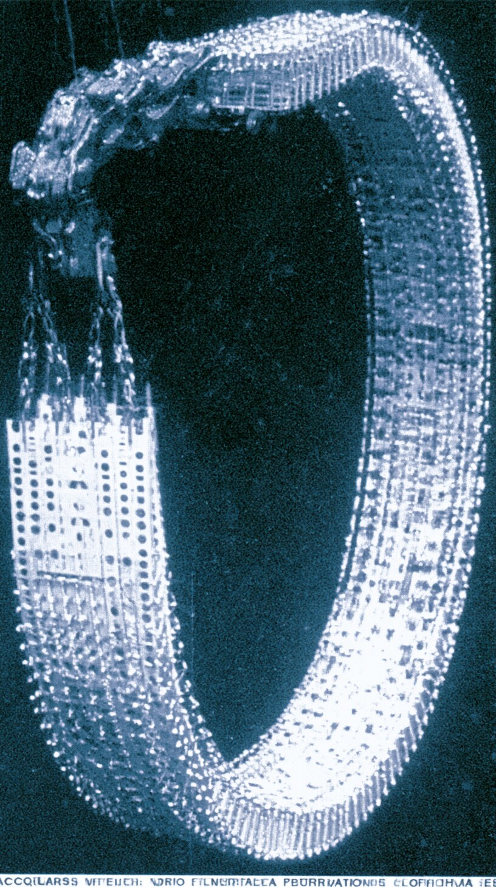
Chain of Jacquard loom punch cards, holes controlling individual warp threads, card linkage mechanism visible, sequential pattern cards in a long chain, dark background, programmable textile technology aesthetic --ar 9:16
prompts/all-prompts-v3.txt:256
Complex chemical reaction mechanism written on a chalkboard, curved arrows showing electron movement, intermediates in brackets, catalytic cycle, reagents and conditions above arrows, organic chemistry notation aesthetic --ar 16:9
prompts/all-prompts-v3.txt:484
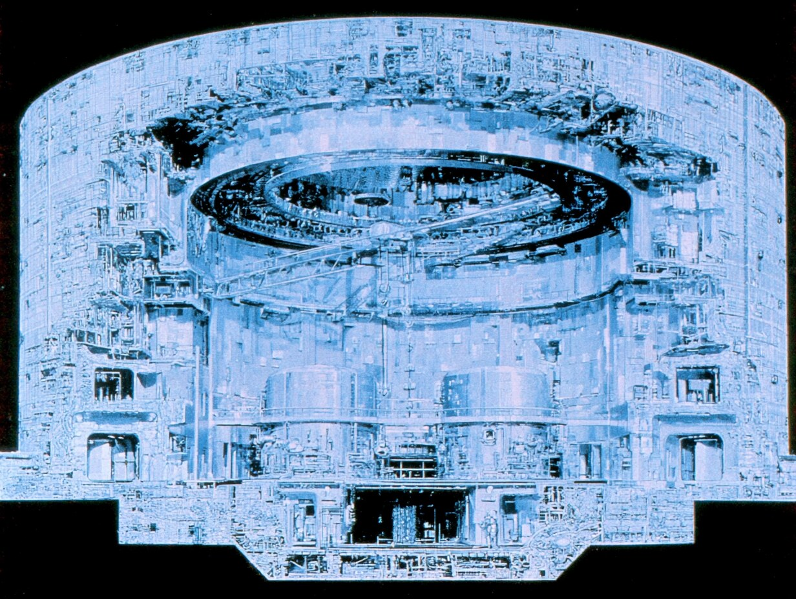
Cross-section of reactor containment building, thick reinforced concrete shell, steel liner, equipment airlock, personnel airlock, polar crane, steam generators inside, dark background, nuclear safety barrier aesthetic --ar 4:3
prompts/all-prompts-v3.txt:568
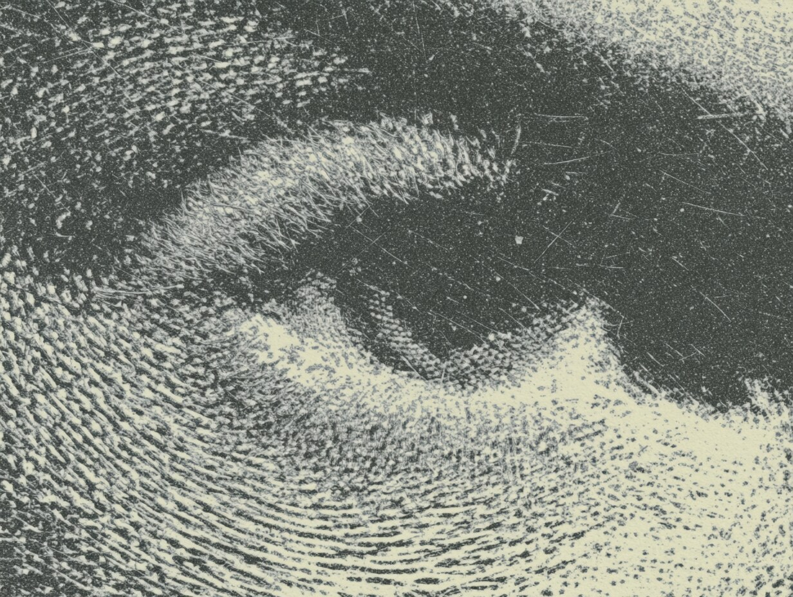
Extreme close-up of drypoint engraving burr on a metal plate, raised metal curl alongside incised line, characteristic soft fuzzy line quality, plate surface scratches, raking light revealing depth, intaglio printmaking detail aesthetic --ar 4:3
prompts/all-prompts-v3.txt:172
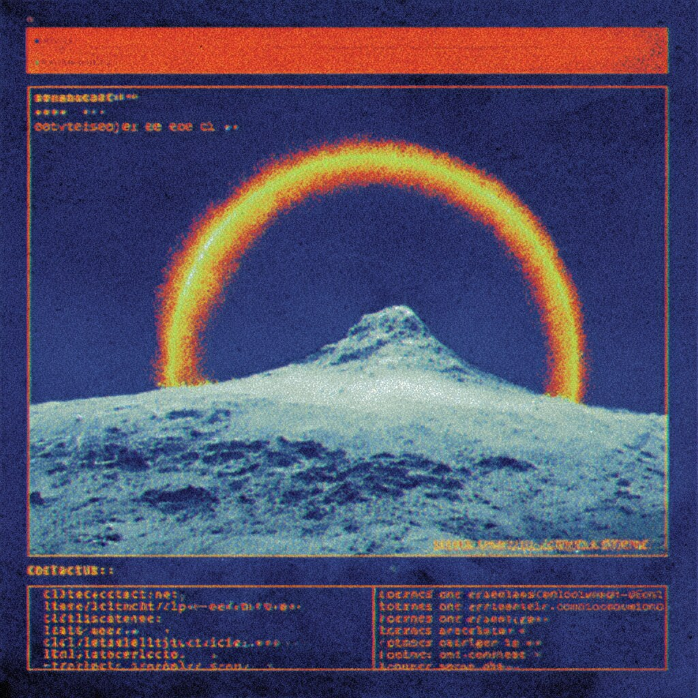
Full-screen alert notification, large warning icon, incident description in monospace, severity level indicator, affected services list, escalation contacts, timestamp, dark background with red accent border, incident response aesthetic --ar 1:1 --style raw --stylize 150 --v 6.1
prompts/all-prompts-v2.txt:314
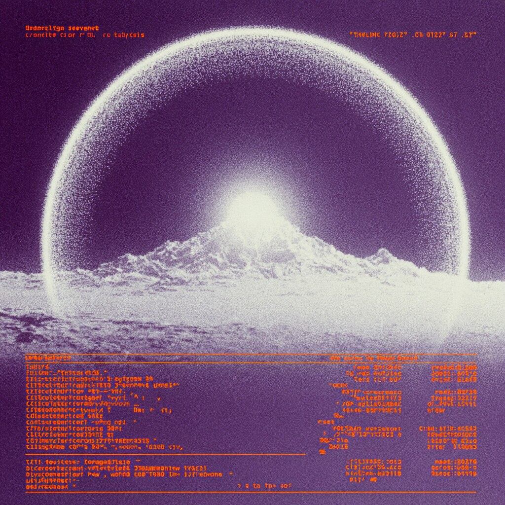
Full-screen alert notification, large warning icon, incident description in monospace, severity level indicator, affected services list, escalation contacts, timestamp, dark background with red accent border, incident response aesthetic --ar 1:1 --style raw --stylize 150 --v 6.1
prompts/all-prompts-v2.txt:314
Full-screen alert notification, large warning icon, incident description in monospace, severity level indicator, affected services list, escalation contacts, timestamp, dark background with red accent border, incident response aesthetic --ar 1:1 --style raw --stylize 150 --v 6.1
prompts/all-prompts-v2.txt:314
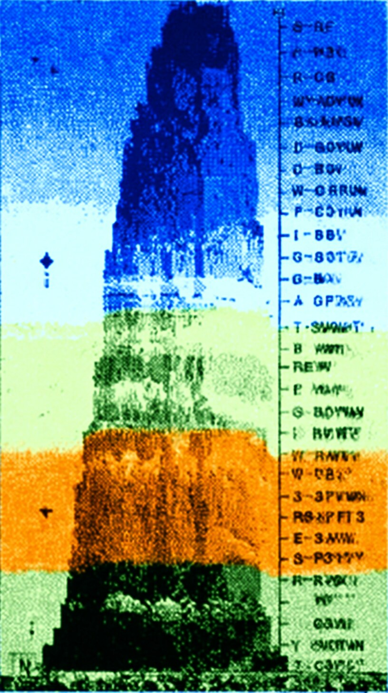
Geotechnical boring log diagram, columnar section showing soil layers, SPT blow counts, sample types, water table symbol, depth scale in feet, soil descriptions in monospace, classification symbols, foundation engineering aesthetic --ar 9:16
prompts/all-prompts-v3.txt:121
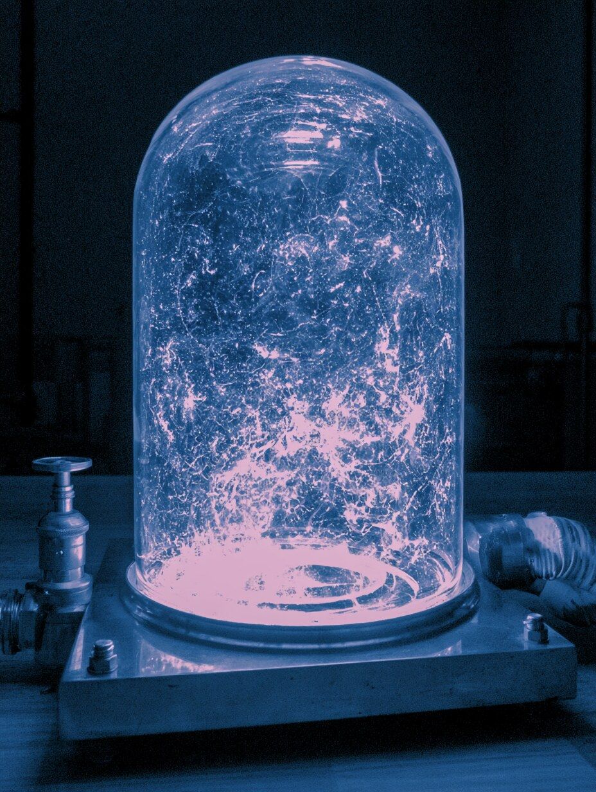
Glass bell jar on vacuum plate, interior evacuated, residual gas discharge glow, stopcock valve, vacuum hose connection, brass base plate, dark background, physics demonstration apparatus aesthetic --ar 3:4
prompts/all-prompts-v3.txt:547
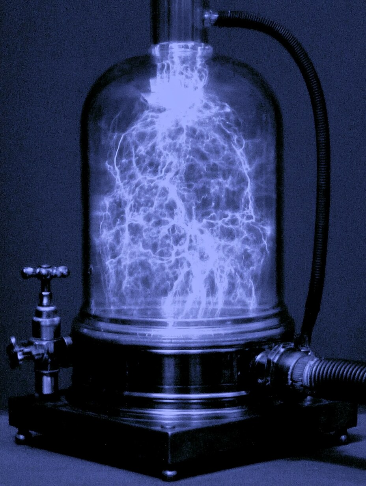
Glass bell jar on vacuum plate, interior evacuated, residual gas discharge glow, stopcock valve, vacuum hose connection, brass base plate, dark background, physics demonstration apparatus aesthetic --ar 3:4
prompts/all-prompts-v3.txt:547
Infinite corridor between server racks, blue and violet LED status indicators in darkness, cold air curtain visible as mist, cable bundles overhead, floor tiles with ventilation grilles, vanishing point perspective, no human figures, hyperscale infrastructure, dark industrial photography --ar 16:9 --style raw --stylize 250 --v 6.1
prompts/all-prompts-v2.txt:47
Infinite corridor between server racks, blue and violet LED status indicators in darkness, cold air curtain visible as mist, cable bundles overhead, floor tiles with ventilation grilles, vanishing point perspective, no human figures, hyperscale infrastructure, dark industrial photography --ar 16:9 --style raw --stylize 250 --v 6.1
prompts/all-prompts-v2.txt:47
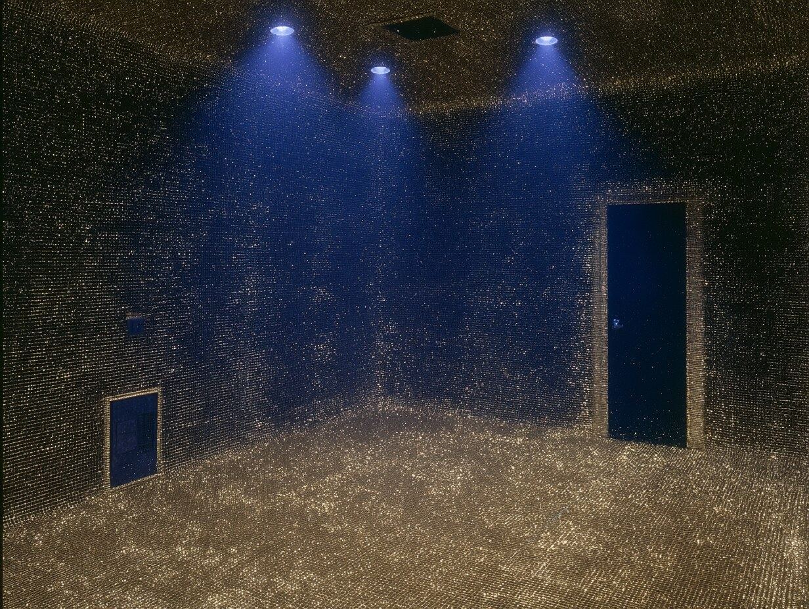
Interior of a Faraday cage room, copper mesh on walls ceiling and floor, filtered power entry panel, waveguide-below-cutoff ventilation ducts, RF-tight door with finger stock gaskets, dark interior, electromagnetic shielding aesthetic --ar 4:3
prompts/all-prompts-v3.txt:553
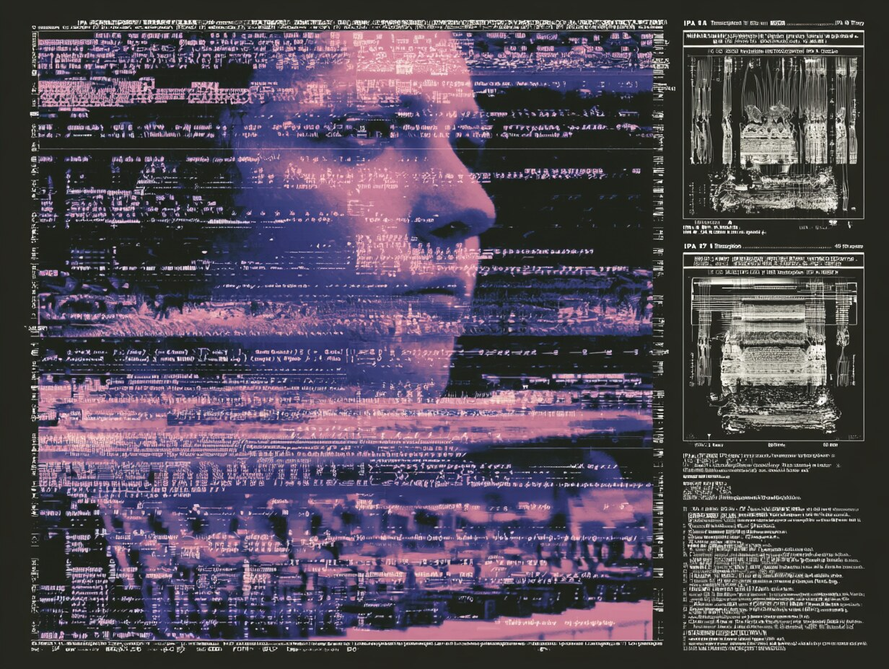
IPA phonetic transcription of speech, broad and narrow transcription compared, diacritical marks, tone markings, syllable boundaries, stress marks, articulatory diagrams alongside, linguistics notation aesthetic --ar 4:3
prompts/all-prompts-v3.txt:490
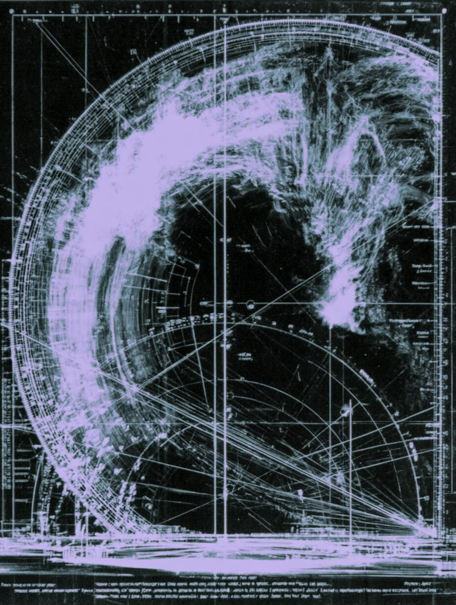
Multi-scale nomogram for engineering calculation, three or more graduated axes, alignment line solving equation, pivot point, scale labels in monospace, isopleth drawn across scales, dark background, graphical computation aesthetic --ar 3:4
prompts/all-prompts-v3.txt:532
Oscilloscope in XY mode displaying a complex harmonic pattern, interlocking loops forming a geometric rosette, bright spots at turnaround points, fading trails showing beam persistence, void black background, analog signal visualization aesthetic --ar 1:1
prompts/all-prompts-v3.txt:46
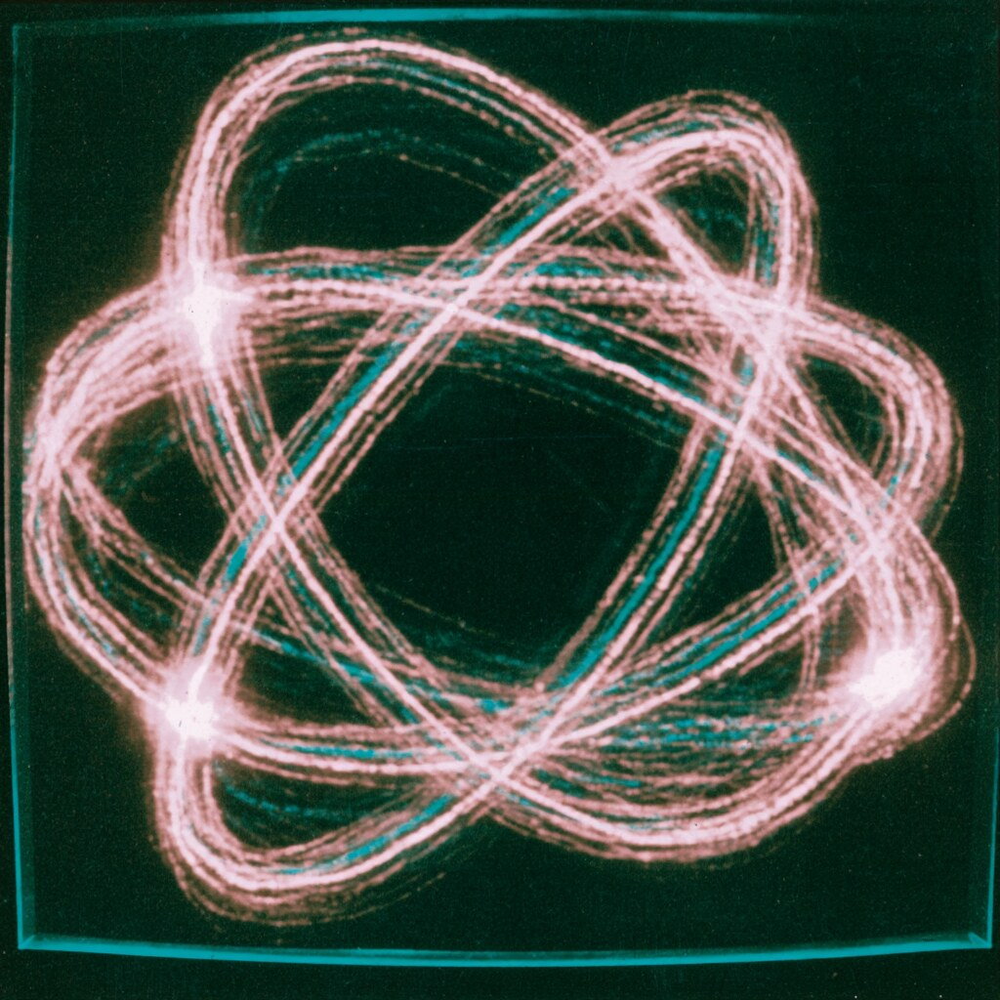
Oscilloscope in XY mode displaying a complex harmonic pattern, interlocking loops forming a geometric rosette, bright spots at turnaround points, fading trails showing beam persistence, void black background, analog signal visualization aesthetic --ar 1:1
prompts/all-prompts-v3.txt:46
Oscilloscope in XY mode displaying a complex harmonic pattern, interlocking loops forming a geometric rosette, bright spots at turnaround points, fading trails showing beam persistence, void black background, analog signal visualization aesthetic --ar 1:1
prompts/all-prompts-v3.txt:46
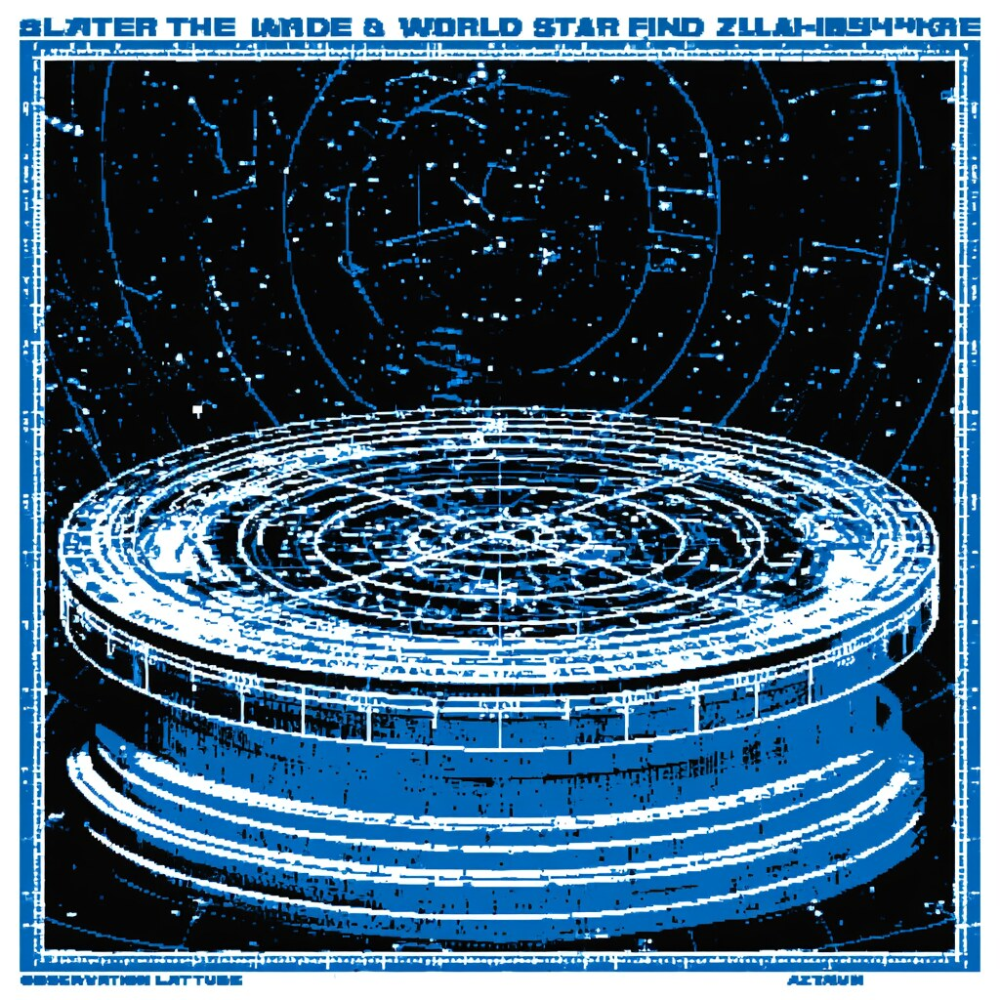
Rude star finder planisphere, transparent overlay rotating over star field base, altitude and azimuth curves, constellation labels in monospace, observation latitude setting, dark background, practical celestial navigation aesthetic --ar 1:1
prompts/all-prompts-v3.txt:334
Screenshot of an ancient graphical user interface, bitmap icons at low resolution, menu bar with unfamiliar options, dialog box with monospace text, window border decorations from early computing, 8-bit color palette, software archaeology aesthetic --ar 4:3 --style raw --stylize 200 --v 6.1
prompts/all-prompts-v2.txt:284
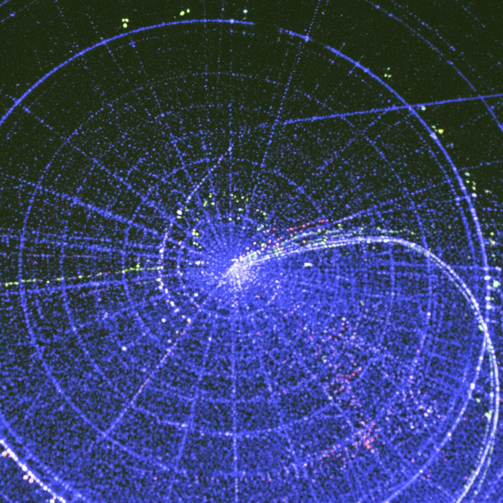
Smith chart with impedance plot, normalized resistance and reactance circles, plotted impedance trajectory showing matching network transformation, VSWR circle, dark background with fine grid, RF engineering aesthetic --ar 1:1
prompts/all-prompts-v3.txt:379